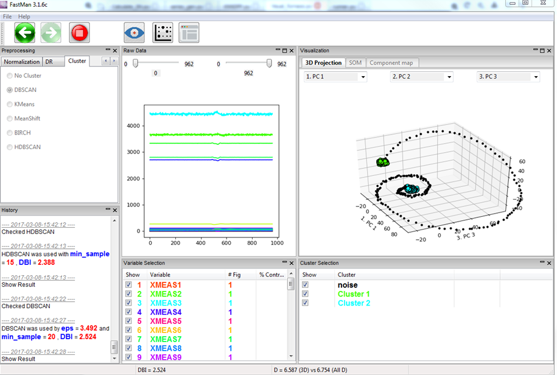
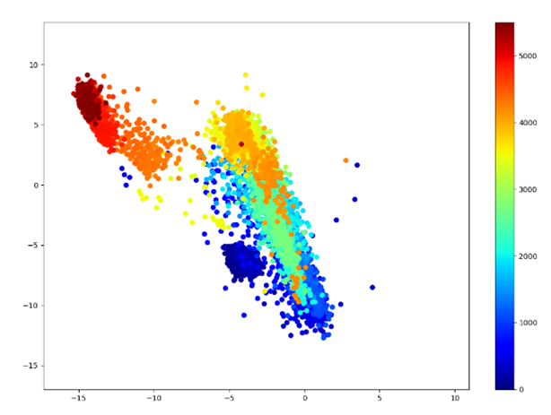
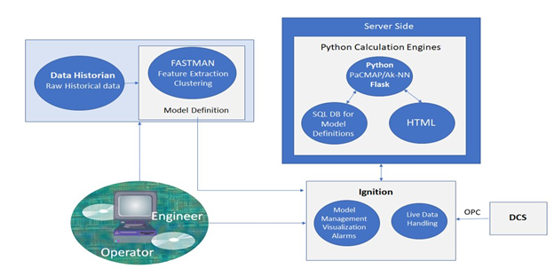
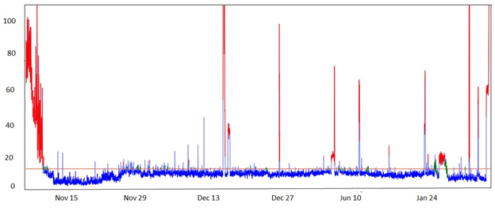
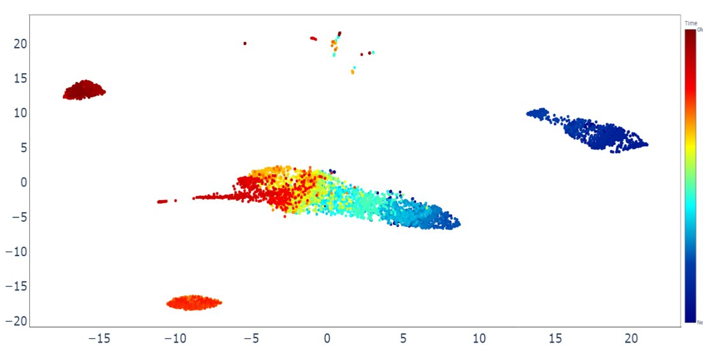
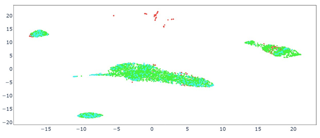
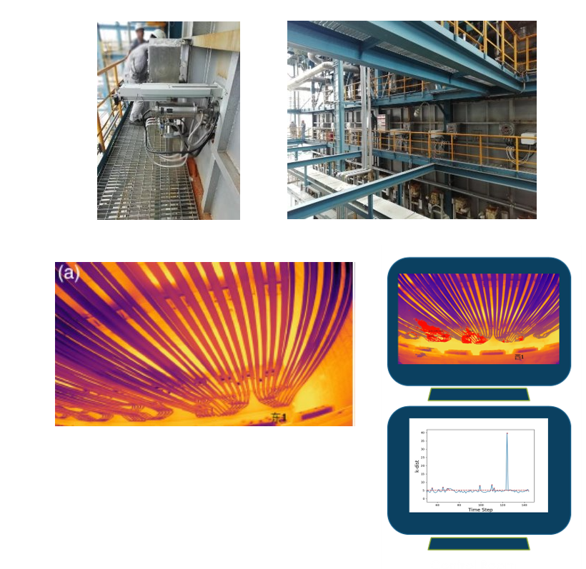
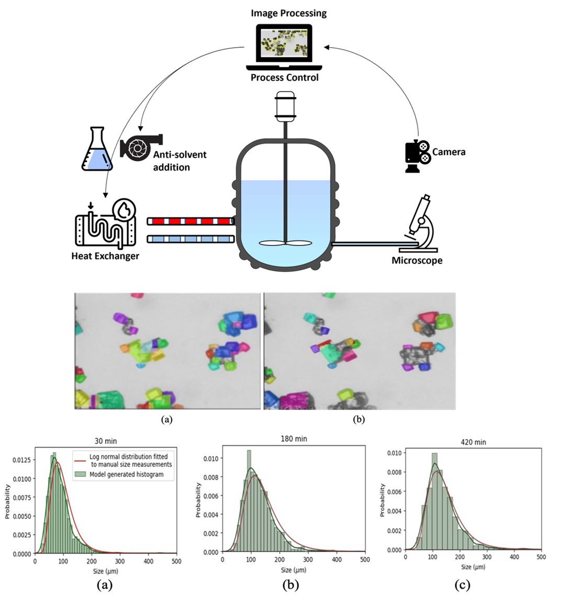

Research Area
Data-Driven Modeling & Monitoring
Placeholder intro about industrial data analytics.

Unsupervised Knowledge Discovery
Data-Driven Insights with FastMAN
Modern chemical plants have distributed control systems (DCS) that handle normal operations and quality control. However, the DCS cannot compensate for all fault events such as fouling or equipment failures. Process monitoring techniques can highlight trends in data and detect faults faster, reducing or even preventing the damage that faults can cause.
Current interests include data visualization, data clustering, and fault detection & diagnosis. We apply data mining and machine learning algorithms to build systems that provide these functions.


Monitoring
Total Process Monitoring & Supervision
The advent of faster and more reliable computer systems has changed the manner of monitoring and controlling industrial processes. These advancements resulted in the generation of larger amount of process data, yet the task of interpreting and analyzing this data is intimidating. Operators have neither the time, nor often, the expertise to effective process this information.
The PSE group is investigating an automated support system, which can manage plant data and help in decision-making. The objective is to create the theoretical framework, to develop and implement an advanced Integrated Support System (ISS) for process monitoring, data analysis and interpretation, event detection and diagnosis as well as operations support for chemical and petrochemical industry.



Online Diagnostic Tool (ODT)
Real Time Fault Detection via Ignition Platform
Offline models are developed using historical process data to capture the underlying relationships between variables, define normal operating regions, and establish feature representations through techniques such as feature extraction and clustering. These models form the basis of a model definition layer, which can then be used for real-time fault detection and diagnosis.
Once deployed, these models are integrated into a real-time monitoring architecture where live process data is continuously streamed from plant systems (e.g., via OPC-connected DCS) into a central platform such as Ignition. The offline-defined models are then utilized by server-side computation engines to evaluate incoming data in real time, enabling visualization, alarm generation, and decision support. This integration allows operators and engineers to compare current process conditions against established model behavior, ensuring continuous monitoring, system-wide visibility, and scalable deployment across industrial and mobile interfaces.
Within this framework, the Adaptive k-Nearest Neighbors (Ak-NN) method serves as a distance-based monitoring technique that operates on the deployed models and incoming data. By comparing real-time observations to their nearest neighbors in the learned feature space, Ak-NN quantifies deviations from normal operation and detects potential faults. Its adaptive nature allows it to track time-varying process behavior and extend continuous normal operating regions, reducing sensitivity to gradual shifts while maintaining responsiveness to abnormal events.

Industrial Pyrolysis Reactor Application
Deep Learning Image-based Monitoring
The figure illustrates an image-based monitoring framework for industrial pyrolysis reactors, combining visual inspection, infrared thermography, and data-driven analytics. High-temperature reactor tubes (operating above ~800 °C) are captured using infrared cameras, producing thermal images that reveal temperature distribution and structural behavior inside the furnace.
A deep learning model is applied to automatically identify tube regions within these images and extract key features such as surface temperature and geometric deformation. These features are then processed using statistical and machine learning methods—such as adaptive k-nearest neighbors—to detect abnormal operating conditions and faults in real time.
Together, this approach enables continuous, non-intrusive monitoring of reactor performance, providing operators with enhanced visibility, early fault detection, and improved decision support in high-temperature industrial environments.

On-line Image-based Sensor for CSD
Deep Learning Image-based Monitoring
This figure illustrates an image-based monitoring and control framework for crystallization processes. A stirred crystallizer is equipped with in situ imaging tools (camera/microscope), enabling continuous acquisition of particle images during operation. These images are processed using machine learning and deep learning algorithms to extract crystal features such as size, shape, and distribution in real time.
The segmented images (middle row) show individual crystals identified and tracked during different stages of the process, while the bottom plots represent the evolution of the crystal size distribution (CSD) over time. CSD is a critical quality attribute in crystallization, directly impacting downstream processing and product performance.
Deep learning-based image analysis enables accurate detection of crystals even in dense suspensions, converting visual data into quantitative measurements without manual tuning. These measurements can then be used for feedback control—adjusting process variables such as temperature or anti-solvent addition—to achieve desired crystal properties and maintain optimal operating conditions.
Overall, this approach provides a real-time, non-invasive sensor for crystallization systems, allowing improved monitoring, control of CSD, and enhanced product quality in pharmaceutical and chemical manufacturing.

Current Research
Time-Series Prediction & Process Analysis
Time-series data from chemical and industrial processes present unique challenges due to noise, missing values, nonlinear dynamics, time delays, changing operating conditions, and strong correlations among process variables. Predicting and forecasting these systems requires models that can capture both short-term transient behavior and long-term process trends. By combining historical plant data, feature extraction, machine learning, and dynamic modeling approaches, time-series methods can be used to forecast future process states, identify abnormal trends, and support proactive decision-making before faults or performance losses occur.
In addition to prediction and forecasting, the PSE group studies unsupervised methods for discovering hidden patterns in process time-series data without requiring labeled fault information. Recent work such as the WARP-MaP framework explores graph-based and time-warped embeddings for time-series analysis and process monitoring. These approaches are designed to compare dynamic trajectories, identify similarities across operating periods, and reveal meaningful process behavior in complex datasets, enabling improved monitoring, visualization, and diagnosis of industrial systems.